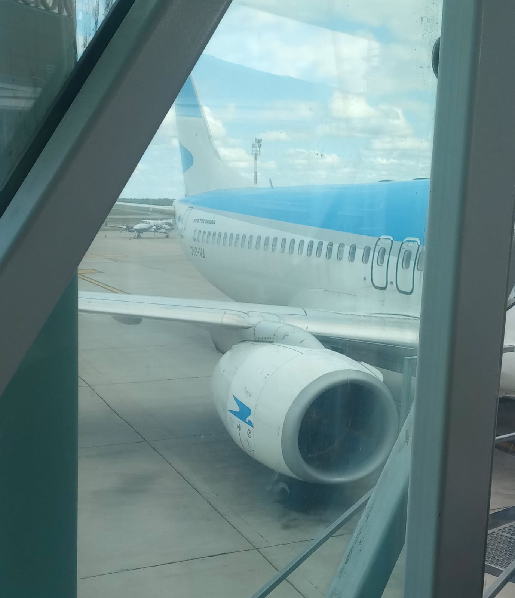
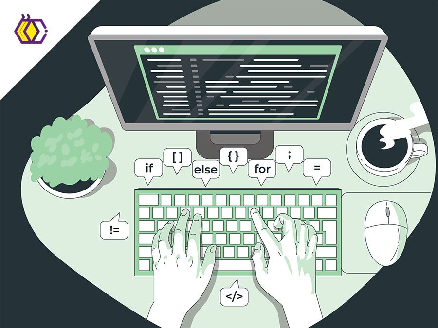
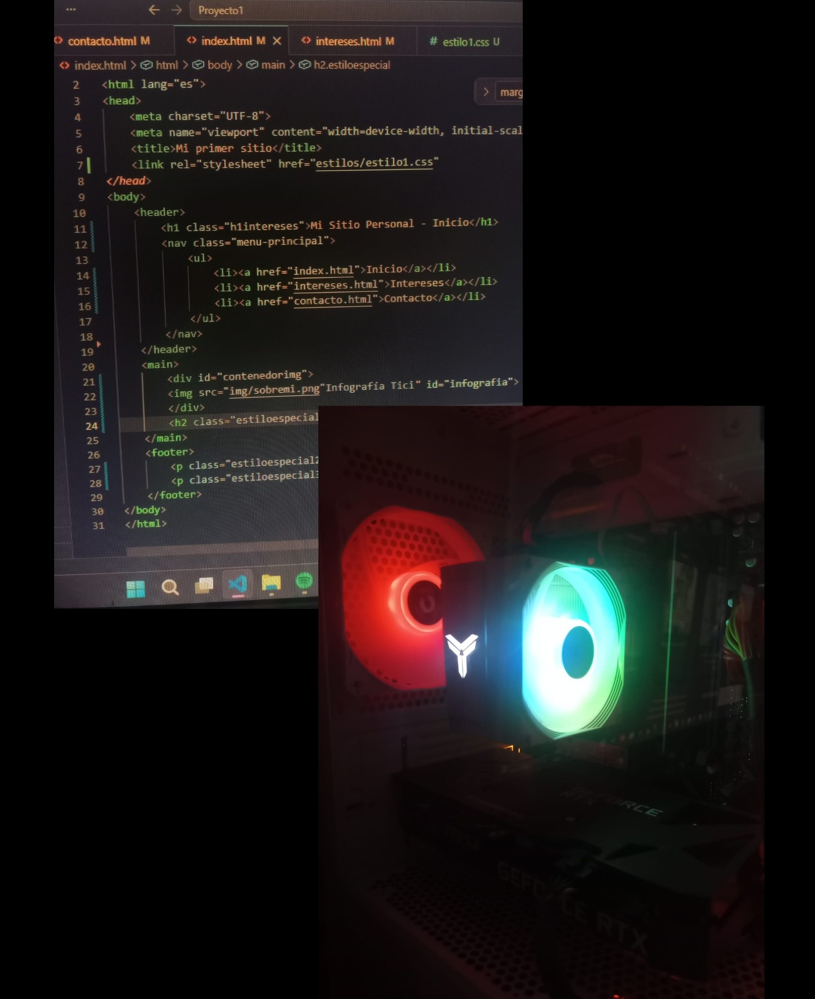

Viajar

Me encanta explorar nuevos lugares o revisitarlos. Recientemente estuve recorriendo distintas ciudades de Chile y en el futuro me gustaría ir al exterior.
Música
/cloudfront-us-east-1.images.arcpublishing.com/infobae/7BYAJI4OBRDORB6C7RELI5NF3Y.jpg)
Disfruto mucho ir a festivales como el Lollapalooza y escuchar a mis artistas favoritos a diario, especialmente Gustavo Cerati y Deftones.
Programación

Mi gran objetivo es convertirme en programadora Full Stack. Me entusiasma aprender constantemente nuevos lenguajes y tecnologías.
Informática

Toda mi vida estuve rodeada de computadoras gracias a mi papá. Hoy estudio la Licenciatura en Sistemas para convertir esto en mi profesión.